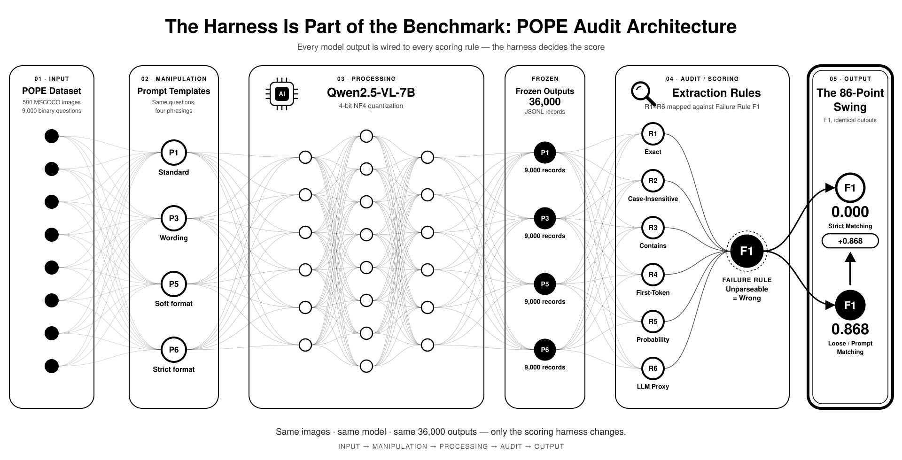
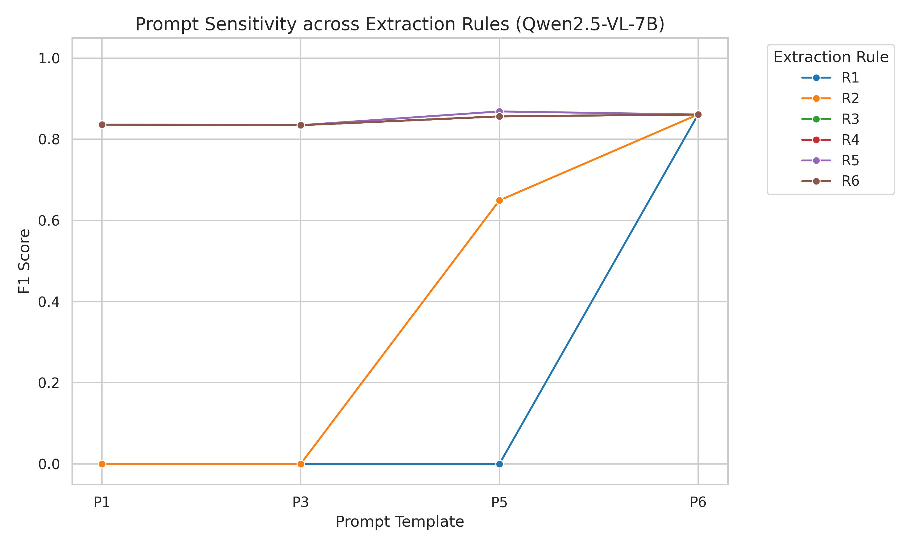
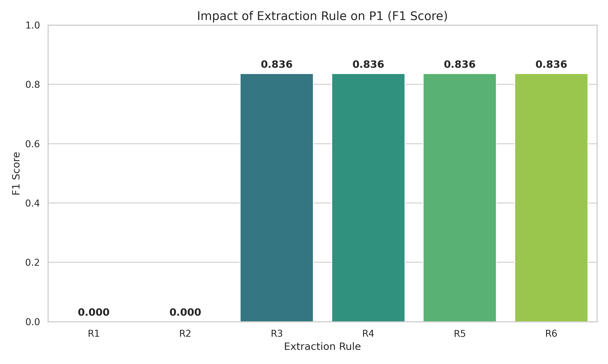

The Research Question
How much of a reported POPE score is determined by the model's actual capability, and how much is merely an artifact of the prompt template and answer-extraction rule used by the researcher?
A controlled audit of prompt and extraction sensitivity in the POPE object-hallucination benchmark.
As Vision-Language Models (VLMs) become increasingly capable, the benchmarks used to evaluate them must be scrutinized just as rigorously as the models themselves. This project investigates whether the standard scoring pipelines for the POPE benchmark introduce artificial variance.
How much of a reported POPE score is determined by the model's actual capability, and how much is merely an artifact of the prompt template and answer-extraction rule used by the researcher?
To isolate the harness from the model, Qwen2.5-VL-7B outputs are generated once and frozen. These identical 36,000 outputs are then replayed through multiple scoring configurations.
9,000 POPE questions were evaluated across 4 prompt styles (P1, P3, P5, P6). This results in a massive, statistically robust dataset that exposes the hidden variance in standard evaluations.
A model's reported score is not a neutral measurement. It is a joint function of the model and the evaluation code.
By holding Qwen2.5-VL-7B's outputs completely fixed, we demonstrate that benchmark scores are largely artifacts of the evaluation harness. A strict exact-match parser fails completely (F1 = 0.000) because the model generates natural language. However, a simple substring parser recovers high apparent capability (F1 = 0.836) without changing a single model weight.
The pipeline is designed to decouple the AI model from the measurement tool. By freezing the outputs at the earliest possible stage, we ensure that any downstream score differences are caused entirely by the harness.
We systematically varied the two most under-specified components of the POPE evaluation pipeline: how the question is asked, and how the answer is parsed.
The table below reveals the core anomaly. When Prompt P1 is paired with Rule R1 (Exact Match), the score drops to zero. But applying Rule R3 (Contains) to the exact same model outputs immediately reveals high capability. This 83-point swing is purely an artifact of the parser.
| Prompt | Template | R1 (Exact) | R2 (Lowercase) | R3 (Contains) | R4 (First-Token) | R5 (Probability) |
|---|---|---|---|---|---|---|
| P1 | Standard | 0.000 | 0.000 | 0.836 | 0.836 | 0.836 |
| P3 | Wording | 0.000 | 0.000 | 0.835 | 0.835 | 0.835 |
| P5 | Soft Format | 0.000 | 0.649 | 0.856 | 0.856 | 0.868 |
| P6 | Strict Format | 0.861 | 0.861 | 0.861 | 0.861 | 0.861 |

Detailed dependency and data-flow view of the evaluation harness.

F1 changes across prompt templates for each extraction rule.

The parser alone can move P1 from failure to high apparent capability.
Input, manipulation, processing, audit, and output stages.
Transparency is a core requirement of trustworthy AI evaluation. All code, the pre-registration protocol, and the aggregated scoring outputs are publicly available.
Download the 8-page research report, including the preregistration context, results, and discussion of construct validity.
Inspect the data download, inference sweep, scoring, analysis, and report source files on GitHub.
# Regenerate figures and the analysis table from the aggregate CSV
bash run_all.shThe raw JSONL outputs (36,000 records) are excluded from version control to keep the repository lightweight. The aggregate CSV, figures, scripts, and report preserve the auditable result.
00_preregistration/ → protocol amendments and pre-registration 01_data/ → POPE data acquisition scripts 03_inference/ → Qwen sweep and generation scripts 04_scoring/ → extraction rules, failure rules, and results.csv 06_analysis/ → figures, tables, architecture, and analysis scripts 07_report/ → final PDF and LaTeX report source docs/ → this GitHub Pages project site
Due to shared-server network restrictions (specifically, firewalls blocking AWS CDN and PyPI), this audit evaluated only one model: Qwen2.5-VL-7B. Models such as LLaVA-1.5 and InternVL2 could not be downloaded.
Despite this single-model constraint, the effect is so extreme (an 86-point swing) that it is highly likely to generalize across other model architectures. Future work will extend this audit to multi-model comparisons and apply the same harness-sensitivity analysis to other multimodal benchmarks such as MMMU and SEED-Bench.
This audit builds upon recent work in benchmark validity, vision-language modeling, and leaderboard dynamics.